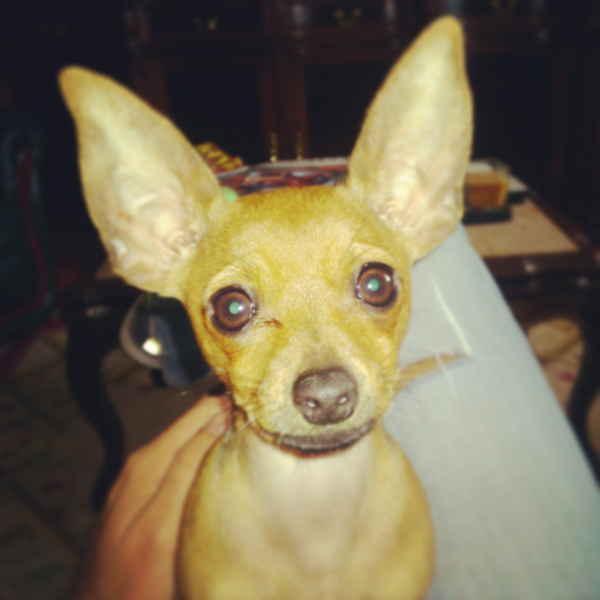
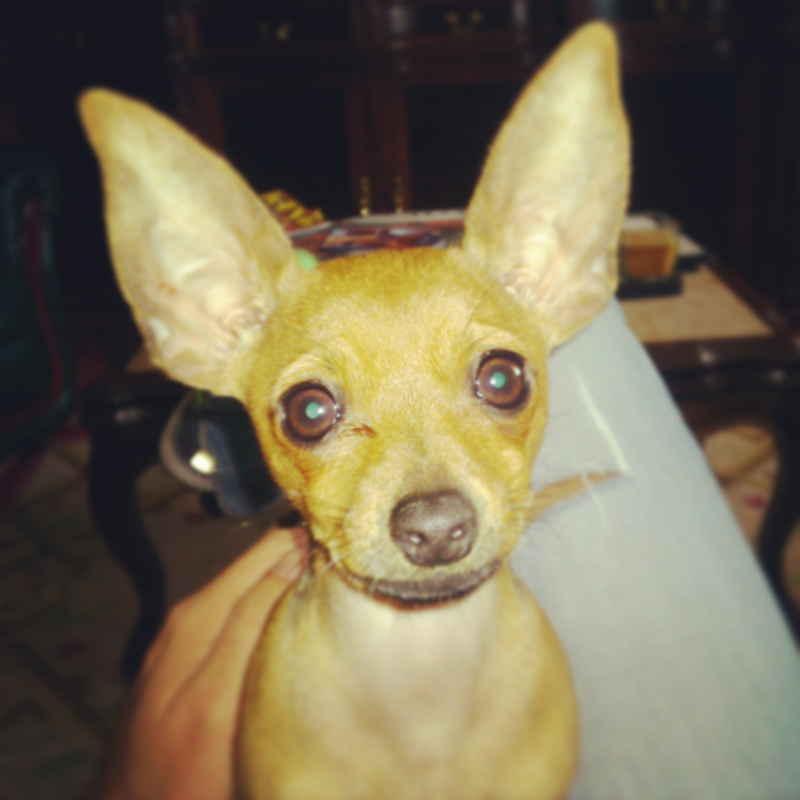
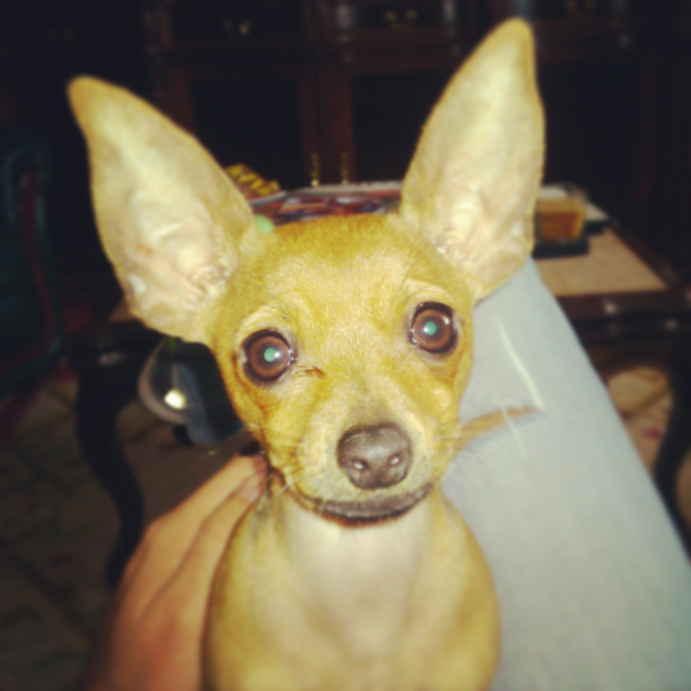

Os Estrelas da Minha Vida
Kika, uma dócil Cane Corso, é protetora, amorosa e sempre disposta a encantar quem está à sua volta.
Luna, uma pequena Pinscher cheia de energia, transforma cada dia numa aventura repleta de diversão.
 

Kika, uma dócil Cane Corso, é protetora, amorosa e sempre disposta a encantar quem está à sua volta.
Luna, uma pequena Pinscher cheia de energia, transforma cada dia numa aventura repleta de diversão.
